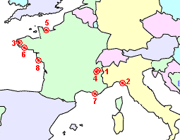

- Chambery - Inland SE France (Main QTH)
Additional logs for temporary locations:
- ??? - Coastal N Italy (AGO)
- Argol - Coastal NW France (ARG)
- Le Bajat - Inland SE France (BAJ)
- Collevile-Sur-Mer - Coastal N France (CSM)
- Guidel-Plages - Coastal NW France (GUI)
- Six-Four-Les-Plages - Coastal S France (SF)
- Saint-Jean-De-Monts - Coastal W France (SJM)
|
 |